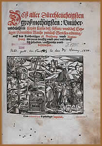
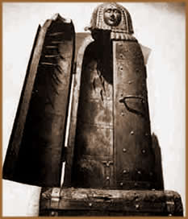

O Malleus Maleficarum (traduzido
para português como Martelo das Feiticeiras ou
Martelo das Bruxas) é um livro escrito em 1484
e publicado em 1486 (ou 1487), por dois monges alemães
dominicanos, Heinrich Kramer e James Sprenger, que se tornou uma
espécie de "manual contra a bruxaria". O livro
foi amplamente utilizado pelos inquisidores por aproximadamente
duzentos e cinqüenta anos, até o fim da Santa
Inquisição, e servia para identificar bruxas
e os malefícios causados por elas, além dos procedimentos
legais para acusá-las e condená-las.
O
Malleus Maleficarum traz inúmeras e exageradas descrições
e, até certo ponto, apelativas e incoerentes. O livro divide-se
em três partes distintas, sendo que cada parte subdivide-se
em capítulos chamados de Questões. A primeira
parte, que contém dezoito questões, ensina a reconhecer
bruxas em seus múltiplos disfarces e atitudes. A segunda
parte traz apenas duas ques- tões, mas a primeira está
subdividida em dezesseis capítulos e a segunda em oito
capítulos. Esta segunda parte expõe os tipos de
malefícios, classificando-os e explicando-os detalhadamente,
e os métodos para desfazê-los. A terceira e última
parte, que contém uma introdução geral e
trinta e cinco questões subdivididas, condiciona as formalidades
para agir "legalmente" contra as bruxas, demonstrando
como inquiri-las e condená-las, tanto nos tribunais civis
como eclesiásticos.
As teses centrais do Malleus Maleficarum fundamentaram-se
na idéia de que o demônio, sob a permissão
de Deus, procura fazer o máximo de mal aos homens para
apropriar-se de suas almas. Este mal é feito prioritariamente
através do corpo, único canal em que o demônio
pode predominar. A influência demo- níaca é
feita através do controle da sexualidade, e por ela, o
demônio se apropria primeiramente do corpo e depois da alma
do homem. Segundo o livro, as mulheres são o maior canal
de ação demoníaca.
Ainda, a primeira e mais importante característica
descrita no livro, responsável por todo o poder das feiticeiras,
é copular com o demônio. Portanto, Satã é
o "senhor do prazer". Dessa forma, uma vez obtida a
relação com o demônio, as feiticeiras são
capazes de desencadear todos os males, especialmente impotência
masculina, impossibilidade de livrar-se de paixões desorde-
nadas, oferendas de crianças à Satã, abortos,
destruição das colheitas, doenças nos animais,
entre outros. Porém, no próprio livro é citado
que o coito com o demônio não seria exatamente carnal,
já que estas criaturas eram espíritos, mas ocorria
através de rituais orgíacos.
O surgimento do Malleus
Maleficarum
No início do século IX, havia a crença
popular sobre existência de bruxos que, através de
artifícios sobrenaturais, eram capazes de provocar discórdia,
doenças e morte. Por sua vez, a Igreja não aceitava
a existência de bruxos e ainda, baseado no Conselho eclesiástico
de São Patrício (St. Patrick), afirmava que "um
cristão que acreditasse em vampiros, era o mesmo que declarar-se
bruxo, confesso ao demônio" e "pessoas
com crenças não poderiam ser aceitas pela Igreja
a menos que revogue com suas palavras o crime que cometeu".
Na segunda metade do século X já
havia penalidades severas para quem fizesse uso de artes mágicas.
No século XIV (1326) a Igreja autoriza a Inquisição
a investigar os casos de bruxaria. Pouco mais de cem anos depois,
em 1430, teólogos cristãos começam a escrever
livros que "provam" a existência de bruxos. O
livro Formicarius, escrito por Thomas de Brabant, em
1480, aborda a relação entre o homem e a bruxaria.
Em uma sociedade na qual a religiosidade, política,
sexualidade e artes estavam interligadas e sob o domínio
da Igreja, transgredir as normas de conduta em apenas um desses
campos, acarretaria, por conseqüência, numa transgressão
generalizada e direta sobre o poder do clero. Dessa forma, sob
o papado de Inocêncio VIII, o Malleus Maleficarum nasceu
da necessidade que a Igreja Católica tinha de organizar
e legitimar suas práticas, principalmente quando relacionadas
à Santa Inquisição, que já atuava
desde o final do século XII. Até aquele momento,
não havia uma referência oficial que abordasse a
questão da bruxaria. Fazia-se necessário um documento
escrito, aprovado pelo corpo eclesiástico, que tivesse
valor legal e determinasse com maior precisão possível,
as práticas de feitiçaria e suas respectivas punições.
Heinrich Kramer e James Sprenger, através
de uma bula de Inocêncio VIII, foram nomeados inquisidores
para que investigassem as práticas de bruxaria nas províncias
do norte da Alemanha e incumbidos de produzir a obra que institucionaliza-se
e legitima-se a ação da Igreja. Por aproximadamente
dois anos, encarregaram-se da produção do espesso
trabalho de mais de quatrocentas páginas. Por fim, o Formicarius
foi acoplado e passou a fazer parte do tratado eclesiástico
intitulado Malleus Maleficarum. A imprensa, recém surgida,
facilitou a divulgação da campanha movida pela Igreja
contra as feiticeiras.
Mulheres &
Feiticeiras
Tradicionalmente, nas culturas pré-cristãs,
a mulher era objeto de adoração e respeito. Era
a fonte doadora da vida e símbolo da fertilidade. Porém,
mesmo sob a alegação formal de combater a heresia
em todas as suas variações, as descrições
contidas no Malleus Maleficarum, fundamentadas em conceitos de
uma civilização patriarcal, contribuíram
para construir uma idéia fantasiosa e infamante sobre as
mulheres.
Esta idéia podia ser legitimada através
do preceito que Eva surgiu de uma costela torta de Adão.
Logo, ocorreu a associação que, conseqüentemente,
todas as mulheres não podiam ser retas em sua conduta.
Ainda, o pecado original ocorreu através do ato sexual
(na metáfora de Adão e Eva comendo maçã)
e, assim, a sexualidade era o ponto mais vulnerável do
ser humano. Portanto, segundo o livro, "mas a razão
natural está em que a mulher é mais carnal do que
o homem, o que se evidencia pelas suas muitas abominações
carnais".
Desse
modo, qualquer mulher que se dispusesse a tratar pequenas enfermidades
ou ferimentos com preparados do- mésticos à base
de ervas, morasse sozinha e tivesse um animal de estimação
(um gato, por exemplo), tivesse com- portamento pernicioso, entre
outras alegações superficiais, podia ser acusada
de bruxaria.
A tortura,
como é sugerida no próprio Malleus Malefi- carum,
era o método utilizado para extrair as confissões
das supostas bruxas. Aparelhos como A dama de ferro e
a Cadeira das Bruxas eram amplamente utilizados. Além
de torturas menos sofisticadas, como aquecimento dos pés
ou introdução de ferros sob as unhas. Deste modo,
a ré passava por tantos suplícios que acabava por
admitir as sentenças elaboradas pelo inquisidor.
Ainda, as lendas em torno das supostas bruxas propa-
gavam-se entre o povo. Através da ação demoníaca,
uma mulher podia ser capaz de se transformar em animais, voar
e manipular a vontade, confundir o pensamento e a atitude de outras
pessoas. Provocar ereção masculina ou a impotência
sexual; além de inibir ou aumentar a libido de suas vítimas.
As bruxas, em seus rituais, dançavam nuas nos campos e
se alimentavam de fetos e cadáveres.
Atualmente, aos olhos da ciência moderna,
principalmente da psicanálise, diversos "sintomas
e indícios" de possessão demoníaca descritos
no Malleus Maleficarum são apenas disfunções
mentais, como histeria e alucinações. O ocorrido
em Salem, Nova Inglaterra, no fim do século XVII, é
um bom exemplo de histeria coletiva. Ainda sob o olhar dos historiadores
modernos, os motivos que levaram à produção
do Malleus Maleficarum não são mais que artimanhas
políticas com pouca ou nenhuma argumentação
religiosa.
De qualquer forma, o Malleus Maleficarum é
um produto religioso e político dos mais significativos
da Idade Média. Não é possível dissociá-lo
do contexto histórico da Santa Inquisição,
da Igreja Católica medieval, tampouco dos principais acontecimentos
daquela época, como a peste negra, a queda do sistema feudal,
a invenção da imprensa e o início da Renascença.
Isto porque, de forma direta ou até mesmo contraditória,
um acontecimento impacta sobre outro. Assim, o Malleus Maleficarum
é mais que um "código penal eclesiástico"
utilizado na Idade Média; é um registro fiel do
que foi parte do pensamento da Igreja Católica medieval,
com uma imensa oposição à figura da mulher
e um desejo ensandecido de manter a autoridade política,
econômica e religiosa e, desse modo, de todo um contexto
deste capítulo da história da humanidade.
Por
Spectrum